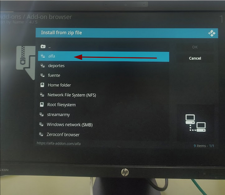
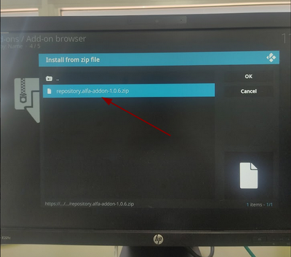
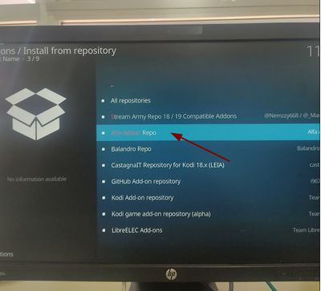

El Addon Alfa es un Addon que nos permite ver todo tipo de canales, desde películas de cualquier tipo hasta fútbol o baloncesto.
Para instalar este addon hemos seguido una serie de pasos:
El primer paso es entrar en ajustes y en el administrador de arhivos seleccionar añadir fuente.
Ahora tenemos que poner la url del repositorio del Alfa que es https://alfa-addon.com/alfa/ y le ponemos el nombre alfa
Ahora hay que ir a instalar desde arhivo zip y seleccionar el alfa.
Seleccionamos alfa y nos tiene que salir un repositorio .zip, lo instalamos y esperamos a que nos aparezca la notificación de que está instalado.
Una vez está instalado volvemos atrás y en vez de instalar desde repositorio archivo zip, indicamos instalar desde repositorio.
Seleccionamos Alfa-Addon Repo.
Ahora seleccionamos Addons de vídeo y seleccionamos el repositorio Alfa y lo instalamos.
Si hemos seguido todos los pasos ya podemos disponer de alfa y podemos comprobar si funciona.